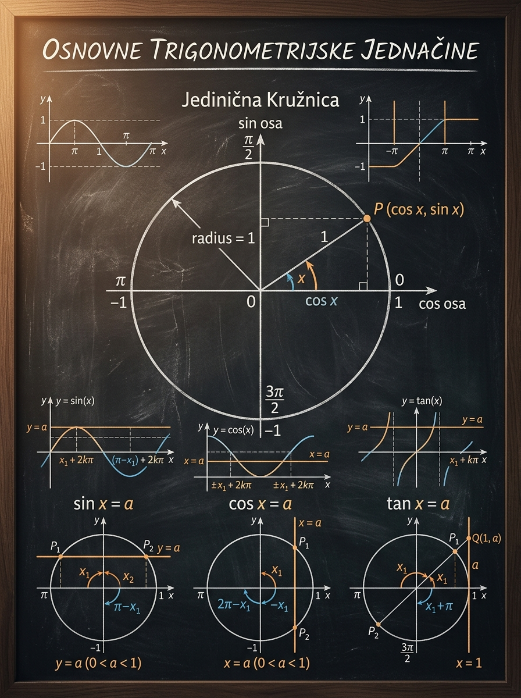

Da bez lutanja rešavaš bazne oblike i da svaki odgovor napišeš kao ceo skup rešenja, a ne kao jedan ugao.
Matoteka znanje · Lekcija 39
Osnovne trigonometrijske jednačine
Na prijemnom nije dovoljno da pronađeš jedan ugao. Kod trigonometrijskih jednačina moraš da vidiš sve uglove koji daju isti sinus, kosinus, tangens ili kotangens, da pravilno zapišeš opšte rešenje i da zatim izdvojiš samo ona rešenja koja pripadaju zadatom intervalu.
\[\sin x = a,\qquad \cos x = a\]
\[\tan x = a,\qquad \cot x = a\]
Da staneš kod prvog ugla ili da dodaš pogrešnu periodu: \(2k\pi\) tamo gde treba \(k\pi\), ili obrnuto.
Brzo prepoznavanje da li postoje 0, 1 ili 2 rešenja u jednom krugu i precizno brojanje rešenja na zadatom intervalu.

Zašto je ova lekcija važna
Ovo je prva tačka gde student mora da misli periodično
Do sada si često radio sa jednom vrednošću ugla ili jednim crtežom na kružnici. Ovde se prvi put potpuno ozbiljno pojavljuje beskonačan skup rešenja. Zato je ova lekcija presudna: ona te uči da isti položaj na kružnici ili ista vrednost funkcije ponavljaju odgovor u pravilnim razmacima.
Sve složenije metode kasnije na kraju svode zadatak na bazni oblik. Ako ovde nisi siguran, kasnije ćeš grešiti i kad metoda bude dobra.
Na prijemnom često nije dovoljno napisati opšte rešenje. Traži se i koliko rešenja leži u intervalu \( [0,2\pi] \), \( [-\pi,\pi] \) ili sličnom opsegu.
Kada razumeš jediničnu kružnicu, odmah vidiš da li je dobijeni ugao uopšte smislen i da li si zaboravio drugu granu ili periodu.
Ključna pedagoška ideja: kod ovih jednačina ne tražiš „broj” kao kod linearnih jednačina, već tražiš sve uglove koji imaju isto trigonometrijsko ponašanje. Zato je vizuelno razmišljanje preko kružnice ovde mnogo važnije nego puka mehanička primena formule.
Ideja sa kružnicom
Jednačina znači: pronađi odgovarajuće tačke na jediničnoj kružnici
Ako ovu lekciju posmatraš samo kao niz formula, lako ćeš mešati grane i periode. Ako je gledaš preko kružnice, sve postaje mnogo prirodnije: sinus je ordinata, kosinus je apscisa, a tangens i kotangens čitaju se preko pomoćnih tangenti.
- Kod \( \sin x = a \) tražiš sve tačke kružnice čija je \(y\)-koordinata jednaka \(a\).
- Kod \( \cos x = a \) tražiš sve tačke kružnice čija je \(x\)-koordinata jednaka \(a\).
- Kod \( \tan x = a \) tražiš smer zraka koji na tangenti \(x=1\) seče tačku \(Q(1,a)\).
- Kod \( \cot x = a \) analogno koristiš pomoćnu pravu \(y=1\) i tačku \(Q(a,1)\).
- Ugao možeš da povećaš za pun krug \(2\pi\) i dobiješ isti sinus i kosinus.
- Tangens i kotangens se već posle pola kruga \( \pi \) ponavljaju, jer su zasnovani na odnosu koordinata.
- Zato je jedan ugao samo „predstavnik” cele porodice rešenja.
\[\sin x = a\]
Ako je \( |a| < 1 \), horizontalna prava \(y=a\) seče kružnicu u dve tačke, pa u jednom krugu obično dobijaš dva rešenja. Ako je \( |a| = 1 \), dobijaš jedno dodirno rešenje. Ako je \( |a| > 1 \), nema realnih rešenja.
\[\cos x = a\]
Potpuno ista logika važi, samo sada gledaš vertikalu \(x=a\). Zato i za kosinus važi uslov \( |a| \le 1 \) za postojanje realnih rešenja.
\[\tan x = a\]
Ovde nema ograničenja kao kod sinusa i kosinusa. Za svaki realan \(a\) postoji tačno jedna porodica rešenja, jer svaka prava kroz koordinatni početak i tačku \(Q(1,a)\) određuje jedan smer, a zatim se odgovor ponavlja na \( \pi \).
\[\cot x = a\]
I ovde za svaki realan \(a\) postoji po jedna porodica rešenja sa periodom \( \pi \). Samo pazi: oznaka \( \operatorname{arccot} \) nije potpuno ista u svim udžbenicima, pa je često sigurnije razmišljati preko kružnice ili preko pretvaranja u tangens.
\[ \sin x = a,\ \cos x = a: \begin{cases} 0,& |a|>1\\ 1,& |a|=1\\ 2,& |a|<1 \end{cases} \]
Ovo je jedna od najkorisnijih mentalnih provera na prijemnom.
\[ \tan x = a,\ \cot x = a \Rightarrow \text{po jedno rešenje na svakoj periodi } \pi \]
Zato kod tangensa i kotangensa ne tražiš dve grane u intervalu dužine \( \pi \), već jednu.
Mikro-provera: zašto jednačina \( \sin x = 2 \) nema realna rešenja?
Zato što na jediničnoj kružnici ordinata svake tačke mora da bude između \(-1\) i \(1\). Drugim rečima, skup vrednosti sinusa je \( [-1,1] \). Pošto broj \(2\) ne pripada tom intervalu, prava \(y=2\) uopšte ne seče kružnicu.
Algoritam rešavanja
Uvežbaj isti redosled svaki put
Studenti najčešće greše ne zato što ne znaju formulu, nego zato što preskoče redosled. Ako usvojiš ovaj algoritam, i najstresniji prijemni zadatak postaje mehanički pregledan.
1
Prepoznaj porodicu jednačine
Najpre odredi da li rešavaš jednačinu za sinus, kosinus, tangens ili kotangens. Od toga odmah zavisi i perioda koju ćeš dodavati u opštem rešenju.
2
Proveri da li realna rešenja uopšte postoje
Za \( \sin x = a \) i \( \cos x = a \) mora da važi \( |a| \le 1 \). Kod tangensa i kotangensa takvo ograničenje ne postoji.
3
Nađi rešenja u jednom osnovnom intervalu
Za sinus i kosinus to je najčešće jedan puni krug \( [0,2\pi) \). Za tangens i kotangens dovoljno je da nađeš jedno reprezentativno rešenje na intervalu dužine \( \pi \).
4
Zapiši opšte rešenje sa pravom periodom
Sinus i kosinus traže \(2k\pi\). Tangens i kotangens traže \(k\pi\). Upravo ovde nastaje najveći broj grešaka.
5
Ako je dat interval, proveri konkretne vrednosti
Opšte rešenje samo postavlja šablon. Tek zatim ubacuješ odgovarajuće cele brojeve \(k\) i proveravaš koje vrednosti upadaju u traženi interval.
Inverzna funkcija ti daje početni ugao, ali kružnica ti pokazuje koliko grana zapravo postoji.
Kod sinusa i kosinusa to je drugi ugao na kome se pojavljuje ista ordinata ili ista apscisa u okviru jednog punog kruga.
\( \arcsin a \) ili \( \arccos a \) ne daju automatski kompletan odgovor. Daju samo ugao od koga krećeš.
Prvo pišeš opšte rešenje, pa tek onda izdvajaš konkretne tačke iz zadatog intervala. Obrnuti redosled je rizičan.
Mikro-provera: ako si za \( \sin x = \frac{1}{2} \) našao \( x = \frac{\pi}{6} \), da li je to kraj?
Nije. U jednom punom krugu postoji još jedan ugao sa istom ordinatom, a to je \( \frac{5\pi}{6} \). Zatim na oba ta ugla moraš da dodaš \(2k\pi\). Dakle, prvi pronađeni ugao je samo početak, ne ceo odgovor.
Ključne formule
Ovo je jezgro lekcije koje moraš da koristiš precizno
Formula sama po sebi nije dovoljna ako je ne povezuješ sa kružnicom, ali bez ovih zapisa nema dobrog, potpunog odgovora. Uči ih tako da razumeš i odakle dolaze.
\[ \sin x = a,\quad |a|\le 1 \]
Ako u intervalu \( [0,2\pi) \) dobiješ uglove \(x_1\) i \(x_2\), onda je opšte rešenje
\[ x=x_1+2k\pi \quad \text{ili} \quad x=x_2+2k\pi,\qquad k\in\mathbb{Z}. \]
Ekvivalentno, ako je \( \alpha=\arcsin a \), možeš pisati \(x=\alpha+2k\pi\) ili \(x=\pi-\alpha+2k\pi\).
\[ \cos x = a,\quad |a|\le 1 \]
Ako je \( \alpha=\arccos a \), onda je opšte rešenje
\[ x = \pm \alpha + 2k\pi,\qquad k\in\mathbb{Z}, \]
što praktično znači da u jednom punom krugu uzimaš ugao \( \alpha \) i njegov simetrični položaj \( 2\pi-\alpha \).
\[ \tan x = a,\qquad a\in\mathbb{R} \]
Ako je \( \alpha=\arctan a \), onda je
\[ x=\alpha+k\pi,\qquad k\in\mathbb{Z}. \]
Perioda je \( \pi \), zato nema dve odvojene grane kao kod sinusa i kosinusa. Jedna porodica je dovoljna.
\[ \cot x = a,\qquad a\in\mathbb{R} \]
U školskom zapisu često se piše
\[ x=\operatorname{arccot} a+k\pi,\qquad k\in\mathbb{Z}. \]
Ali pošto se domen i opseg \( \operatorname{arccot} \) razlikuju po udžbenicima, na prijemnom je često sigurnije da rešenje proveriš preko kružnice ili da, kada je praktično, prevedeš zadatak na tangens.
\[ \sin x = 0 \Rightarrow x=k\pi \]
\[ \cos x = 0 \Rightarrow x=\frac{\pi}{2}+k\pi \]
\[ \tan x = 0 \Rightarrow x=k\pi,\qquad \cot x = 0 \Rightarrow x=\frac{\pi}{2}+k\pi \]
\[ \sin x = 1 \Rightarrow x=\frac{\pi}{2}+2k\pi \]
\[ \sin x = -1 \Rightarrow x=\frac{3\pi}{2}+2k\pi \]
\[ \cos x = 1 \Rightarrow x=2k\pi,\qquad \cos x = -1 \Rightarrow x=\pi+2k\pi \]
Ovo su tačke dodira, pa zato nema dve različite grane u jednom krugu.
Brzo pravilo za pamćenje: sinus i kosinus žive na punom krugu, zato dodaješ \(2k\pi\). Tangens i kotangens već posle pola kruga daju isto ponašanje, zato dodaješ \(k\pi\).
Interaktivni deo
Laboratorija opštih rešenja
Izaberi funkciju i vrednost \(a\). Gore na canvasu vidiš geometrijsko tumačenje na kružnici, a dole sva rešenja u izabranom intervalu. Cilj nije da se „igraš”, već da vizuelno shvatiš zašto kod nekih jednačina dobijaš dve grane, a kod nekih jednu.
Brze vrednosti
Za \( \sin x = a \) i \( \cos x = a \) gledaj broj preseka sa kružnicom. Za \( \tan x = a \) i \( \cot x = a \) gledaj pomoćnu tangentu i zapamti da se rešenje ponavlja na \( \pi \).
Narandžasti markeri pokazuju tačke koje daju rešenje na kružnici, a donja osa prikazuje sva rešenja u izabranom intervalu.
\[\sin x = \frac{1}{2}\]
Za sinus realna rešenja postoje samo ako je \( |a| \le 1 \).
Geometrija: tražiš tačke na kružnici čija je ordinata jednaka \( \frac{1}{2} \).
\[x=\frac{\pi}{6},\ \frac{5\pi}{6}\]
U jednom punom krugu \( [0,2\pi) \) dobijaš dve grane.
\[x=\frac{\pi}{6}+2k\pi \quad \text{ili} \quad x=\frac{5\pi}{6}+2k\pi,\ k\in\mathbb{Z}\]
Dodaješ \(2k\pi\) jer sinus ima periodu \(2\pi\).
\[x=-\frac{11\pi}{6},\ -\frac{7\pi}{6},\ \frac{\pi}{6},\ \frac{5\pi}{6}\]
Broj rešenja: 4.
Ako menjaš interval, ne pišeš novu formulu za opšte rešenje. Menja se samo lista konkretnih vrednosti koje upadaju u zadati opseg.
Prvo uzmi nekoliko „lepih” vrednosti poput \(0\), \( \frac{1}{2} \), \( \frac{\sqrt{2}}{2} \), \( \frac{\sqrt{3}}{2} \) i \(1\). Tek kad vidiš pravilo za njih, pomeri klizač na proizvoljne brojeve i proveri da li ti je jasno zašto se rešenja pomeraju.
Kod sinusa i kosinusa broj preseka govori koliko rešenja ima u jednom krugu. Kod tangensa i kotangensa suprotna tačka na kružnici daje isti odnos koordinata, pa zato odmah dobijaš periodu \( \pi \).
Vođeni primeri
Primeri su namerno raspoređeni od osnovnog ka ispitno korisnom
U svakom primeru pazi na dve stvari: kako se dobija osnovni ugao i kako se iz njega prelazi na ceo skup rešenja. Upravo taj prelaz je suština lekcije.
Primer 1: reši jednačinu \( \sin x = \frac{1}{2} \)
Ovo je prvi i najvažniji obrazac: ista ordinata javlja se na dve tačke jedinične kružnice.
Osnovni
- Tražiš uglove čija je ordinata \( \frac{1}{2} \).
- Na standardnim uglovima to su \( \frac{\pi}{6} \) i \( \frac{5\pi}{6} \).
- Pošto je u pitanju sinus, odgovori se ponavljaju na \(2\pi\).
Zato je opšte rešenje
\[
x=\frac{\pi}{6}+2k\pi \quad \text{ili} \quad x=\frac{5\pi}{6}+2k\pi,\qquad k\in\mathbb{Z}.
\]
Važno je da napišeš obe grane.
Najčešća greška je da student napiše samo \( x=\frac{\pi}{6}+2k\pi \). To je nepotpun odgovor jer izostavlja drugi ugao sa istom ordinatom.
Primer 2: reši jednačinu \( \cos x = -\frac{\sqrt{3}}{2} \)
Kod kosinusa gledaš apscisu, pa negativan znak odmah šalje rešenje u levu polovinu kružnice.
Osnovni
- Referentni ugao za \( \frac{\sqrt{3}}{2} \) je \( \frac{\pi}{6} \).
- Pošto kosinus treba da bude negativan, tražiš uglove u drugom i trećem kvadrantu.
- Dobijaš \( \frac{5\pi}{6} \) i \( \frac{7\pi}{6} \).
Opšte rešenje glasi
\[
x=\frac{5\pi}{6}+2k\pi \quad \text{ili} \quad x=\frac{7\pi}{6}+2k\pi,\qquad k\in\mathbb{Z}.
\]
Primer 3: reši jednačinu \( \tan x = -1 \)
Ovde više ne tražiš dve grane na punom krugu, već jednu porodicu sa periodom \( \pi \).
Srednji
- Ugao sa tangensom \(-1\) možeš uzeti kao \( -\frac{\pi}{4} \).
- Pošto tangens ima periodu \( \pi \), sva ostala rešenja dobijaš dodavanjem \(k\pi\).
- Ekvivalentno, mogao bi da kreneš i od \( \frac{3\pi}{4} \), ali bi posle opet dodavao \(k\pi\).
Zgodan zapis je
\[
x=-\frac{\pi}{4}+k\pi,\qquad k\in\mathbb{Z}.
\]
Ovo je isto što i zapis \(x=\frac{3\pi}{4}+k\pi\).
Student ponekad napiše dve posebne grane kao kod sinusa. To nije nužno pogrešno ako su ekvivalentne, ali je nepotrebno i nepregledno. Jedna porodica sa \(k\pi\) je prirodniji odgovor.
Primer 4: reši jednačinu \( \cot x = \sqrt{3} \)
Ovaj primer je važan jer pokazuje kako da razmišljaš kada ti zapis sa \( \operatorname{arccot} \) nije prijatan.
Srednji
- Tražiš ugao za koji je \( \cot x = \sqrt{3} \). To znači da je \( \tan x = \frac{1}{\sqrt{3}} \).
- Odgovarajući referentni ugao je \( \frac{\pi}{6} \).
- Kotangens je pozitivan u prvom i trećem kvadrantu, ali zbog periode \( \pi \) dovoljno je da zadržiš jednu porodicu.
Možeš zapisati
\[
x=\frac{\pi}{6}+k\pi,\qquad k\in\mathbb{Z}.
\]
To je potpuno korektan i pregledan odgovor.
Primer 5: koliko rešenja ima jednačina \( \sin x = -\frac{\sqrt{2}}{2} \) na intervalu \( [-\pi,2\pi] \)?
Ovo je tipičan prijemni zadatak: prvo opšte rešenje, pa onda brojanje konkretnih vrednosti.
Prijemni
- U jednom punom krugu vrednost \( -\frac{\sqrt{2}}{2} \) dobijaš za uglove \( \frac{5\pi}{4} \) i \( \frac{7\pi}{4} \).
- Opšte rešenje je \[ x=\frac{5\pi}{4}+2k\pi \quad \text{ili} \quad x=\frac{7\pi}{4}+2k\pi. \]
- Sada proveri koje vrednosti upadaju u interval \( [-\pi,2\pi] \).
- Za \(k=-1\) dobijaš \( -\frac{3\pi}{4} \) i \( -\frac{\pi}{4} \). Za \(k=0\) dobijaš \( \frac{5\pi}{4} \) i \( \frac{7\pi}{4} \).
Dakle, na datom intervalu postoje tačno 4 rešenja:
\[
-\frac{3\pi}{4},\ -\frac{\pi}{4},\ \frac{5\pi}{4},\ \frac{7\pi}{4}.
\]
Upravo zato je opšte rešenje korisno: iz njega sistematski izdvajaš konkretne vrednosti.
Primer 6: reši jednačinu \( \cos x = 2 \)
Ovaj primer je kratak, ali važan jer na prijemnom štedi vreme kada umeš odmah da vidiš da rešenja nema.
Brza procena
- Skup vrednosti kosinusa je \( [-1,1] \).
- Broj \(2\) ne pripada tom intervalu.
- Zato ne postoji ugao čiji je kosinus jednak \(2\).
Jednačina nema realnih rešenja.
Česte greške
Ovde studenti najčešće gube poene
Obrati pažnju na ove greške već sada, jer se ponavljaju iz zadatka u zadatak. Većina njih nema veze sa teškim računom, već sa nedovoljno jasnim razumevanjem periodičnosti.
Nađe se prvi ugao, ali se ne napiše drugi ugao iz istog kruga koji daje istu ordinatu ili apscisu.
Dodavanje \(k\pi\) kod sinusa i kosinusa ili \(2k\pi\) kod tangensa i kotangensa odmah kvari ceo skup rešenja.
\( \arcsin a \), \( \arccos a \) ili \( \arctan a \) daju početni ugao, ali ne zatvaraju zadatak bez periodičnog nastavka.
Kod sinusa i kosinusa student krene da traži ugao iako realna rešenja uopšte ne postoje.
Opšte rešenje je ispravno, ali se pri ubacivanju vrednosti za \(k\) previdi krajnja tačka intervala ili se neki ugao prebroji dva puta.
Pošto konvencije nisu uvek iste, u zadacima sa kotangensom sigurnije je razmišljati preko kružnice ili preko ekvivalentnog zapisa sa tangensom.
Veza sa prijemnim zadacima
Kako se ova tema realno pojavljuje na testu
Na prijemnom se osnovne trigonometrijske jednačine pojavljuju i direktno i kao završni korak složenijeg zadatka. Zbog toga je važno da ti ovaj nivo bude potpuno siguran.
Najjednostavniji oblik je „reši jednačinu \( \sin x = \frac{1}{2} \)” ili „nađi sva rešenja na intervalu”. Tu se proverava čisto razumevanje kružnice i periode.
Posle identiteta, zamene ili sređivanja izraza često ostane upravo bazni oblik. Ako ga tu ne završiš dobro, ceo zadatak pada.
Umesto samog skupa rešenja, često se traži broj rešenja u zadatom intervalu. To je razlog zašto moraš uredno da pišeš opšte rešenje.
Mala skica kružnice na marginama štedi vreme i smanjuje šansu da zaboraviš kvadrant, znak ili drugu granu.
Mini-checklista za ispit: 1. Da li rešenja uopšte postoje? 2. Koji su uglovi u jednom osnovnom intervalu? 3. Da li treba \(2k\pi\) ili \(k\pi\)? 4. Ako postoji interval, koje konkretne vrednosti \(k\) ulaze?
Vežbe
Vežbaj dok opšte rešenje ne postane rutina
Probaj najpre bez otvaranja rešenja. Tek kada zaista zapneš, proveri postupak. Cilj nije samo da pogodiš rezultat, već da ga napišeš u ispravnom obliku.
Zadatak 1
Reši jednačinu \( \sin x = \frac{\sqrt{3}}{2} \).
Rešenje
U jednom krugu odgovarajući uglovi su \( \frac{\pi}{3} \) i \( \frac{2\pi}{3} \).
\[ x=\frac{\pi}{3}+2k\pi \quad \text{ili} \quad x=\frac{2\pi}{3}+2k\pi,\qquad k\in\mathbb{Z}. \]
Zadatak 2
Reši jednačinu \( \cos x = -\frac{1}{2} \).
Rešenje
U drugom i trećem kvadrantu dobijaš uglove \( \frac{2\pi}{3} \) i \( \frac{4\pi}{3} \).
\[ x=\frac{2\pi}{3}+2k\pi \quad \text{ili} \quad x=\frac{4\pi}{3}+2k\pi,\qquad k\in\mathbb{Z}. \]
Zadatak 3
Reši jednačinu \( \tan x = \sqrt{3} \).
Rešenje
Jedan osnovni ugao je \( \frac{\pi}{3} \).
\[ x=\frac{\pi}{3}+k\pi,\qquad k\in\mathbb{Z}. \]
Zadatak 4
Reši jednačinu \( \cot x = 0 \).
Rešenje
Kotangens je nula kada je kosinus jednak nuli, a sinus različit od nule, odnosno za uglove \( \frac{\pi}{2} \) i njima koterminalne.
\[ x=\frac{\pi}{2}+k\pi,\qquad k\in\mathbb{Z}. \]
Zadatak 5
Koliko rešenja ima jednačina \( \sin x = 0 \) na intervalu \( [-2\pi,2\pi] \)?
Rešenje
Opšte rešenje je \( x=k\pi \).
Na intervalu \( [-2\pi,2\pi] \) dozvoljene su vrednosti \( -2\pi,-\pi,0,\pi,2\pi \), pa postoji ukupno 5 rešenja.
Zadatak 6
Objasni zašto jednačina \( \cos x = -2 \) nema realna rešenja, bez upotrebe kalkulatora.
Rešenje
Skup vrednosti kosinusa je \( [-1,1] \). Pošto broj \(-2\) nije u tom intervalu, ne postoji realan ugao sa takvim kosinusom.
Završni rezime
Šta moraš da poneseš iz ove lekcije
Ako sledeće četiri ideje postanu automatske, ova lekcija je zaista legla i spreman si za složenije trigonometrijske jednačine.
Sinus je ordinata, kosinus je apscisa, a tangens i kotangens su odnosi koordinata. To je srce lekcije.
Uvek traži ceo skup rešenja. Kod sinusa i kosinusa često imaš dve grane u jednom krugu, a kod tangensa i kotangensa jednu porodicu sa periodom \( \pi \).
Bez \(2k\pi\) ili \(k\pi\) odgovor nije završen. To nije dodatak radi reda, već suština trigonometrijskih jednačina.
Najpre pišeš opšte rešenje, pa tek onda izdvajaš konkretne vrednosti koje pripadaju zadatom intervalu.
Ključna poruka
Inverzna trigonometrijska funkcija otvara zadatak, ali ga ne završava. Zadatak završavaš tek kada iz početnog ugla vidiš celu porodicu periodičnih rešenja i kada umeš da je primeniš na konkretan interval.